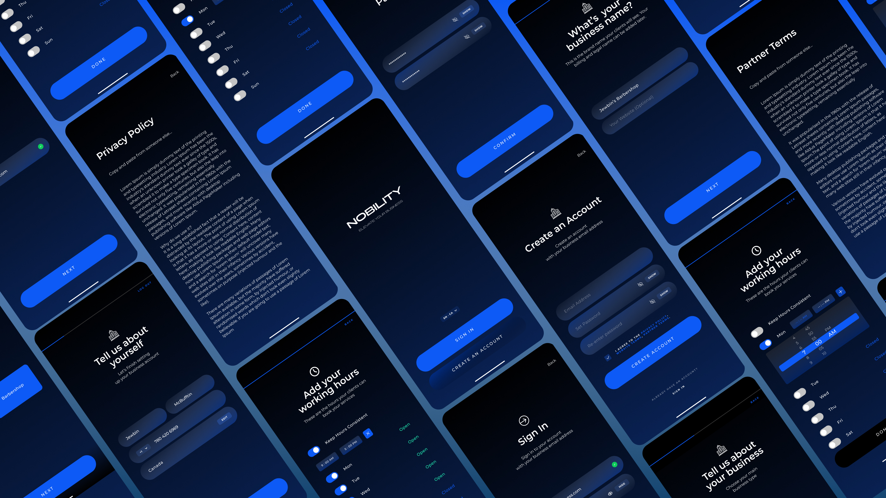

Currently: Software QA @ Reliable Controls.
I like software, working with good people, reading books, drinking lager on a hot day, Neovim, offices where the air conditioning isn't too cold, knit sweaters, and designing data-intensive applications.
#GoOilers
B.Sc Computing Science at SFU.
